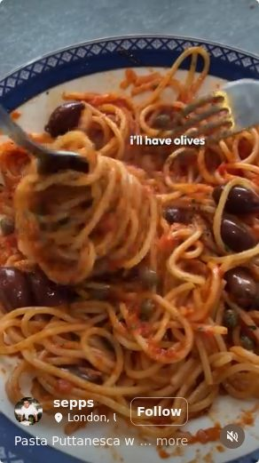
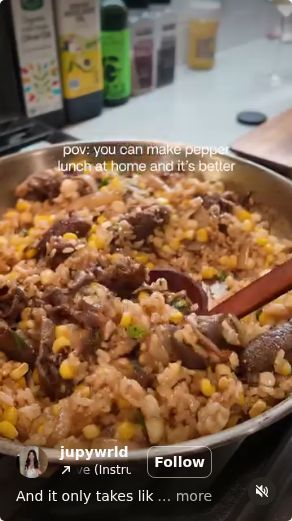
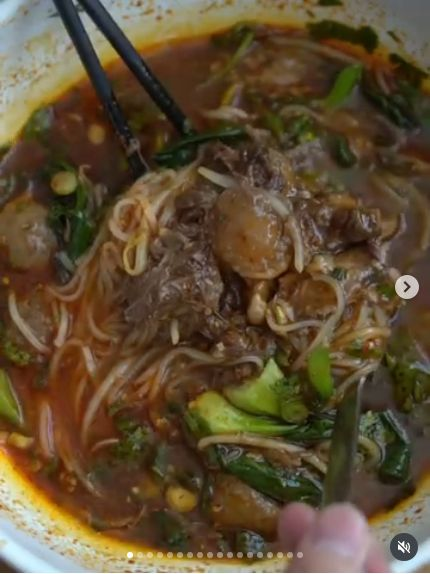

Pasta
Want to try
Italian
Pasta Puttanesca with Nonna
A briny, punchy puttanesca with capers, Kalamata olives, tomato passata, chili flakes, and Parmesan.





What this section does: this is your shared grocery list for saved recipes. Add items from recipe pages, check them off when purchased, and clear the list when you want to start over.